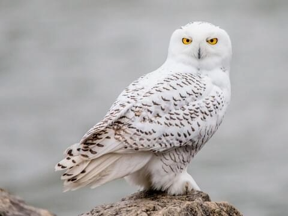
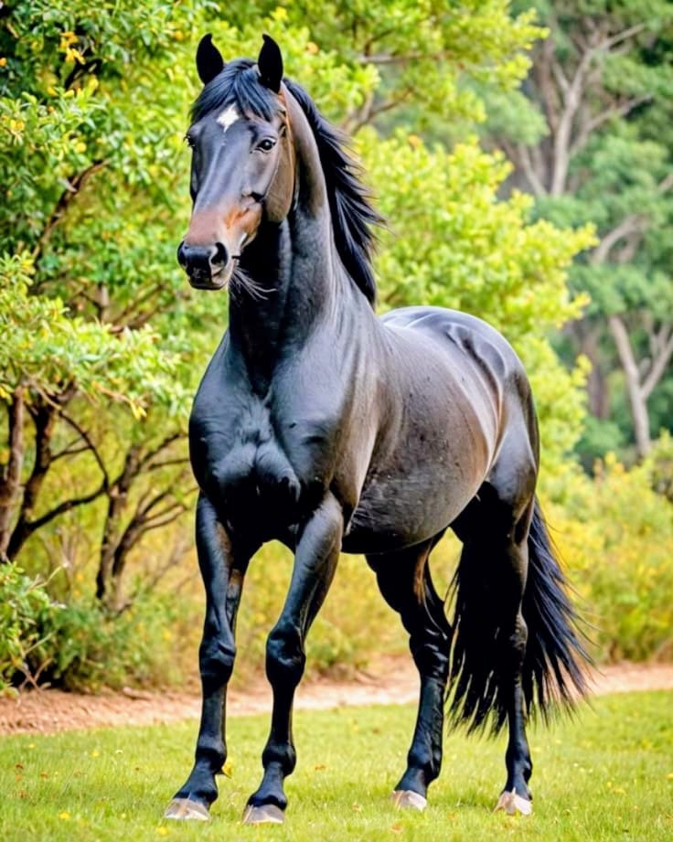
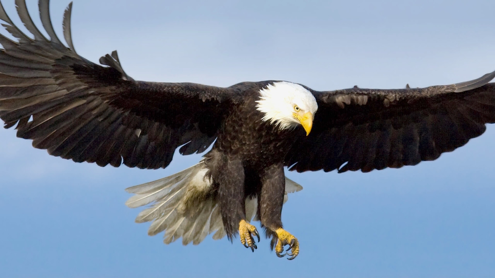

Our Team
Michelle Oanda
GitHub: @KemiOanda
Favorite Tech: Python
Fun Fact: I can finish a book in 2 hours

Quiet strength, sharp vision, and deliberate action — these are the traits I share with the snowy owl. Known for its ability to see through darkness and remain composed in silence, the owl reflects how I approach life and work. I observe first, speak with intention, and act only when the time is right. There’s no rush to be seen, only a steady focus on what matters. The snowy owl’s calm presence and focused instinct resonate with how I learn, lead, and navigate challenges: patiently, thoughtfully, and always with purpose.
Patricia Wangu
GitHub: @TriciaTech
Favorite Tech: Javascript
Fun Fact: I love horses!

The horse moves with grace, strength and quiet purpose.
It knows when to walk, when to run and when to kick.
Grounded, steady and a little wild when it needs to be.
Honestly, if inner peace had hooves, it would be a horse.
Dennis Mugo
GitHub: @Dennis-Mugo
Favorite Tech: React JS
Fun Fact: I don't like swimming in a river!
The Eagle

Eagles Have Vision
If you ever happen to see an eagle sitting high above the tree or cliff of a stiff mountain, watch closely and see
how
attentive the bird is. The body sits still and the head will be tilted side to side to observed what is happening
below,
around and above it. Even if its flying close by, you can observe how keen its eyes are looking for its prey.
Eagles
have a keen vision. Their eyes are specially designed for long distance focus and clarity. They can spot another
eagle
soaring from 50 miles away.
Does this characteristic ring a bell in your mind? I am sure it does. Look at great leaders of this world who
have come
and gone. There are many great leaders that came and went but one characteristic that is common in all is
"Vision".
Vision is a successful leadership characteristic
You must have a vision that guides and leads your team towards the organization's or societal goals. The vision
must be
big and focused. A big, focused vision will produce bigresults.
Kariuki Mary Anne
GitHub: @K-MaryAnne
Favorite Tech: Python
Fun Fact: I am not a fan of Coriander
The Fox

A fox at heart
The fox embodies quiet intelligence, adaptability, and deep intuition.
Foxes aren’t the loudest or strongest, but they navigate challenges with subtle cleverness—waiting, observing, and finding creative paths forward.
Their ability to thrive in diverse environments reminds me to stay flexible and resourceful when circumstances shift.
There’s something about their silent presence that speaks to trusting instincts over force, staying grounded yet open to new opportunities.
The fox inspires me to approach life thoughtfully, blending wit with awareness, and face change with both confidence and humility.
Hawiana
GitHub: @Hawitta
Favorite Tech: Ruby on Rails
Fun Fact: I enjoy reading books and painting

Like a panther sleek, intelligent, observant, and quietly powerful. Panthers move with confidence and precision, never wasting energy, yet always ready to strike when the moment is right. Much like me, they don’t seek the spotlight but command respect naturally. They're strategic, adaptable, and fiercely protective of their space — qualities that show up in how I work, learn, and handle challenges